7 Cómo utilizar el objetivo 100x
7.1 Introducción
El objetivo 100x tiene una cualidad especial que lo hace diferente del resto: se trata de un objetivo de inmersión. Este objetivo debe ser utilizado junto con un aceite de inmersión especialmente diseñado para tal uso. ¿Puede utilizarse este objetivo sin dicho aceite de inmersión? Sí, pero la imagen resultante sería tan pobre en calidad que resultaría inusable en la mayoría de los casos.
Luego de que la luz del condensador atraviesa la muestra, ésta pasa por el aire y a continuación ingresa a la óptica del objetivo. En este pequeño lapso en que la luz pasa por el aire, los fotones que componen esta luz se dispersan un poco y se pierden —con la consiguiente disminución de la calidad de imagen—. Con el empleo del aceite de inmersión esto se evita, ya que, al ser un medio acuoso, los fotones de la luz no se dispersan y salen directamente al objetivo, logrando una imagen de mayor claridad. Dicho esto, es posible que en un primer momento le pueda parecer buena idea utilizar aceite de inmersión con otros objetivos —40x, 60x u 80x, los cuales trabajan muy cerca de la muestra—, lo cierto es que el objetivo 100x es el único diseñado para tal propósito, por lo que está sellado y esto impide que el aceite ingrese a su óptica y lo estropee. El resto de objetivos no están sellados y, de utilizar aceite de inmersión con ellos, lo único que lograría sería estropearlos. Los objetivos distintos al 100x son conocidos como dry o air —«secos» o de «aire», respectivamente— por esta razón. Tenga en cuenta que los objetivos pueden resultar muy costosos. ¿Qué tanto? En función de la marca, su aumento, sus correcciones, sus aperturas numéricas y demás parámetros, algunos pueden llegar a costar tanto como microscopios enteros de ciertas gamas. Por esta razón es preciso y necesario tener cuidado con el uso de los objetivos, no sólo con el de 100x.
7.2 Importante
Antes de proseguir con las instrucciones, por favor, primero cerciórese de lo siguiente:
Que usted ha seguido las instrucciones de la sección Cómo enfocar correctamente hasta llegar al
40x; por lo que deberá encontrarse actualmente en esteobjetivoy con una imagen bien enfocada y optimizada.Que cuenta con el
aceite de inmersióncorrecto para ser utilizado con elobjetivo 100x.Que tiene al alcance de la mano el material necesario para la limpieza del
objetivo 100x, preferiblemente los recomendados por el fabricante delaceite de inmersiónque usted posee.
7.3 Procedimiento
Para llevar a cabo una correcta observación con el objetivo 100x, haga lo siguiente:
Partiendo del
objetivo 40x, mueva elrevólveralobjetivo 100xy a continuación al4x, y a continuación regrese hasta antes del100x, pero sin llegar a este último, de manera tal que elportaobjetossea fácilmente accesible con el espacio dejado entre losobjetivos 100xy4x.Coloque una sola y única gota de
aceite de inmersiónsobre la muestra de interés. Por favor, note aquí varios puntos importantes:El aceite que se emplee ha de ser uno especialmente diseñado para este uso. Evite improvisar y utilizar aceite comestible, aceite automotriz, aceite para bebé, o algún otro. La formulación química de los
aceites de inmersiónha pasado por muchos años de depuración y desarrollo para lograr una sustancia adecuada para este especial propósito. Si las condiciones lo permiten, utilice el aceite de inmersión Cargille, que es el de máxima calidad en el mercado.Existen varios tipos de
aceites de inmersión, los cuales varían en propiedades como la viscosidad. Algunos otros son favorables para la observación con determinadas técnicas, como laepifluorescente, por ejemplo. El aceite de inmersión Cargille tipo A (Figura 7.1) suele ser la opción adecuada en la mayoría de los casos.Tenga extremo cuidado con cambiar de
objetivouna vez ha colocado la gota deaceite de inmersiónen elportaobjetos. Si voluntaria o accidentalmente cambia al40xcorre el riesgo de estropear este objetivo.El
aceite de inmersión, por sus propiedades físicas, debe ser utilizado directamente sobre elportaobjetos—y no sobre elcubreobjetos— por lo que la muestra deberá ser previamente fijada con técnicas químicas o de calor. Por tanto, se induce que elaceite de inmersiónno ha de emplearse con muestras vivas.

Figura 7.1: Aceite de inmersión tipo A, marca Cargille. El de máxima calidad actualmente en el mercado.
Una vez colocada la gota de
aceite de inmersión, termine de mover elrevólverhasta que elobjetivo 100xesté completamente en uso.A continuación, proceda a enfocar y pulir la calidad de la imagen siguiendo las instrucciones de la sección Cómo enfocar correctamente, puntos 13 a 16.
Una vez haya terminado sus observaciones, mueva el
revolverentre el100xy el4xy retire elportaobjetoscon la gota deaceite de inmersión.Si ya no va a hacer más observaciones en este aumento, proceda con la limpieza del mismo; si va a continuar, repita los puntos 2 y 4 de estas instrucciones.
A continuación, limpie el
objetivo 100xutilizando el material apropiado. No utilice agua, pues elaceite de inmersiónes insoluble en esa y otras sustancias. En su lugar utilice los líquidos recomendados por el fabricante del aceite de inmersión, de los cuales usted ya verificó su posesión al principio de estas instrucciones.Terminada la limpieza con el
objetivo 100x, puede continuar haciendo observaciones con los otrosobjetivossiguiendo las instrucciones correspondientes. Si ya no va a utilizar el microscopio, siga las instrucciones del apartado «Cómo guardar correctamente».
7.4 Diagrama de flujo
